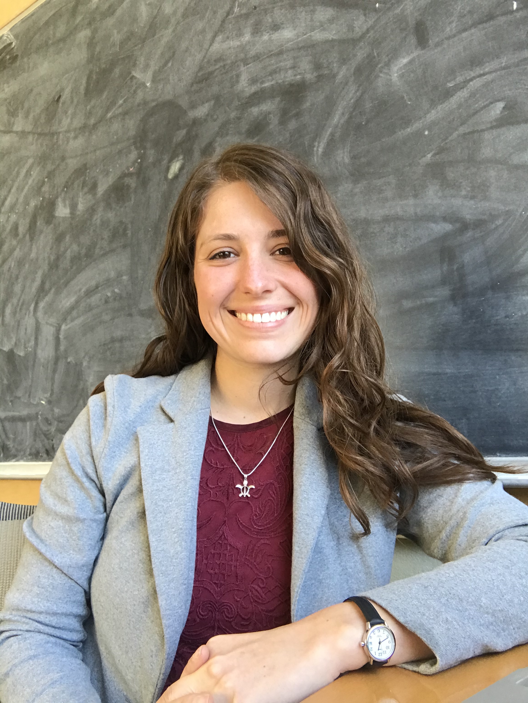

Email: hazelchristy [at] grinnell [dot] edu
Office: Noyce Science Center 2248
Pronouns: she/her
I am an Assistant Professor in the mathematics and statistics deparment at Grinnell College. I do research in algebraic topology with a focus on equivariant homotopy theory. Much of my work has involved computing and understanding algebraic invariants for spaces endowed with an action by some fixed finite group. Check out my "Research" tab for more information and links to my papers.
From 2020-2023 I was a Hedrick Assistant Adjunct Professor at UCLA in the mathematics department working with Mike Hill. I was also involved with the electronic Computational Homotopy Theory (eCHT) online research community and supported as a National Science Foundation (NSF) eCHT Reasearch Training Group Postdoctoral Fellow. I finished my PhD in 2020 at the University of Oregon under the supervision of Dan Dugger.
My "Teaching" tab has information about my current and past courses taught at Grinnell, UCLA, and UO.
Here is a copy of my CV (last updated: August 2023).
The top photo was taken by Aimee Holmes while we were hiking on the Oregon coast.